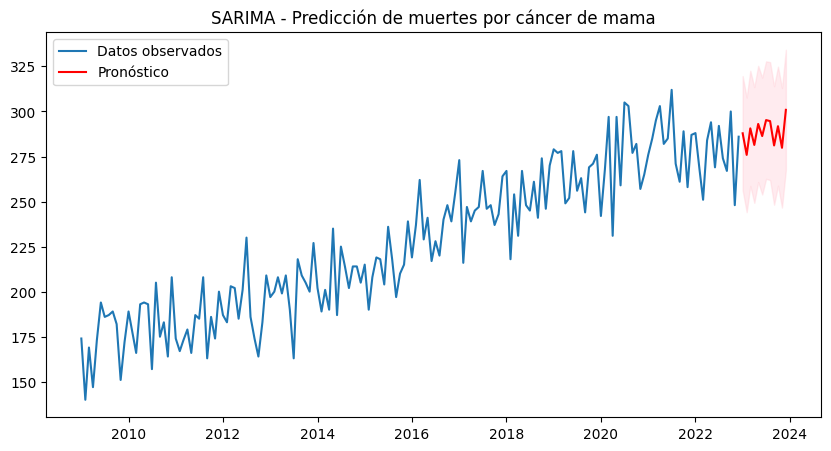
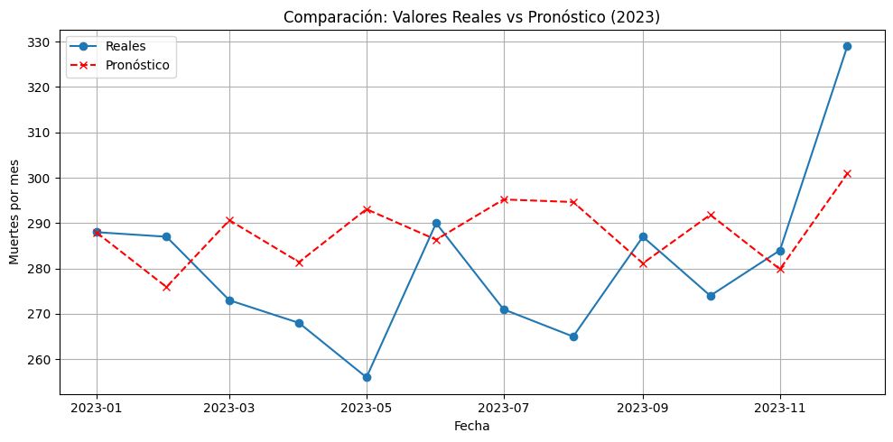

Implementación de modelos#
Librerías y modulos necesarios#
import warnings
import pandas as pd
warnings.filterwarnings('ignore')
Modelo de Series de tiempo#
data = pd.read_csv('../data_tasas/data_to_models.csv')
data.head()
| Unnamed: 0 | region_Def | Nombre_Departamento_Def | Nombre_Municipio_Def | Nombre_Departamento_Res | Nombre_Municipio_Res | sitio_def | año_def | mes_def | sexo | estado_civil | grupo_edad | nivel_edu | seg_social | asistencia_med | causa_basica | Fecha | |
|---|---|---|---|---|---|---|---|---|---|---|---|---|---|---|---|---|---|
| 0 | 32246 | Andina | ANTIOQUIA | MEDELLÍN | ANTIOQUIA | MEDELLÍN | Casa | 2009 | 1 | Femenino | Unión Libre, Divorciado/Otro | 40-54 años | Secundaria | Subsidiado | SI | Parte no especificada | 2009-01 |
| 1 | 32247 | Andina | ANTIOQUIA | MEDELLÍN | ANTIOQUIA | MEDELLÍN | Casa | 2009 | 1 | Femenino | Viudo | 65-74 años | Primaria | Contributivo | SI | Parte no especificada | 2009-01 |
| 2 | 32248 | Andina | ANTIOQUIA | MEDELLÍN | ANTIOQUIA | SABANETA | Hospital o Clínica | 2009 | 1 | Femenino | Casado | 40-54 años | Secundaria | Contributivo | SI | Parte no especificada | 2009-01 |
| 3 | 32249 | Andina | ANTIOQUIA | MEDELLÍN | ANTIOQUIA | BELLO | Hospital o Clínica | 2009 | 1 | Femenino | Casado | 40-54 años | Secundaria | Contributivo | SI | Parte no especificada | 2009-01 |
| 4 | 32250 | Andina | ANTIOQUIA | MEDELLÍN | ANTIOQUIA | MEDELLÍN | Casa | 2009 | 1 | Femenino | Unión Libre, Divorciado/Otro | 40-54 años | Secundaria | Contributivo | SI | Parte no especificada | 2009-01 |
data_sin_2023 = data[(data['año_def'] >= 2009) & (data['año_def'] <= 2022)]
data_2023 = data[data['año_def'] == 2023]
# Crea una columna tipo fecha
data_sin_2023['fecha'] = pd.to_datetime(data_sin_2023['año_def'].astype(str) + '-' + data_sin_2023['mes_def'].astype(str) + '-01')
# Agrupa por mes y cuenta cuántas muertes hubo
df_ts = data_sin_2023.groupby('fecha').size().reset_index(name='y')
# Prophet necesita que las columnas se llamen 'ds' (fecha) y 'y' (valor)
df_ts = df_ts.rename(columns={'fecha': 'ds'})
df_ts
| ds | y | |
|---|---|---|
| 0 | 2009-01-01 | 174 |
| 1 | 2009-02-01 | 140 |
| 2 | 2009-03-01 | 169 |
| 3 | 2009-04-01 | 147 |
| 4 | 2009-05-01 | 173 |
| ... | ... | ... |
| 163 | 2022-08-01 | 274 |
| 164 | 2022-09-01 | 267 |
| 165 | 2022-10-01 | 300 |
| 166 | 2022-11-01 | 248 |
| 167 | 2022-12-01 | 286 |
168 rows × 2 columns
# Crea una columna tipo fecha
data_2023['fecha'] = pd.to_datetime(data_2023['año_def'].astype(str) + '-' + data_2023['mes_def'].astype(str) + '-01')
# Agrupa por mes y cuenta cuántas muertes hubo
df_ts_2023 = data_2023.groupby('fecha').size().reset_index(name='y')
# Prophet necesita que las columnas se llamen 'ds' (fecha) y 'y' (valor)
df_ts_2023 = df_ts_2023.rename(columns={'fecha': 'ds'})
import pandas as pd
import matplotlib.pyplot as plt
from statsmodels.tsa.statespace.sarimax import SARIMAX
# Suponiendo que tienes un DataFrame df_ts con columnas: 'ds' y 'y'
df_ts = df_ts.set_index('ds') # usar fecha como índice
# Ajustar modelo SARIMA (parámetros iniciales: orden=(1,1,1), estacional=(1,1,1,12) para datos mensuales)
model = SARIMAX(df_ts['y'], order=(1, 1, 1), seasonal_order=(1, 1, 1, 12))
results = model.fit()
# Predecir 12 meses adelante
forecast = results.get_forecast(steps=12)
predicted = forecast.predicted_mean
ci = forecast.conf_int()
# Graficar
plt.figure(figsize=(10,5))
plt.plot(df_ts['y'], label='Datos observados')
plt.plot(predicted, label='Pronóstico', color='red')
plt.fill_between(ci.index, ci.iloc[:, 0], ci.iloc[:, 1], color='pink', alpha=0.3)
plt.title('SARIMA - Predicción de muertes por cáncer de mama')
plt.legend()
plt.show()

# Convertir a DataFrame con columnas 'fecha', 'pronóstico', 'límite_inferior', 'límite_superior'
df_forecast = pd.DataFrame({
'fecha': predicted.index,
'pronostico': predicted.values,
'limite_inferior': ci.iloc[:, 0].values,
'limite_superior': ci.iloc[:, 1].values
})
df_forecast.rename(columns={'fecha': 'ds'}, inplace=True)
df_forecast
| ds | pronostico | limite_inferior | limite_superior | |
|---|---|---|---|---|
| 0 | 2023-01-01 | 287.891146 | 256.156660 | 319.625633 |
| 1 | 2023-02-01 | 275.915856 | 244.110617 | 307.721095 |
| 2 | 2023-03-01 | 290.639751 | 258.675298 | 322.604204 |
| 3 | 2023-04-01 | 281.416158 | 249.297017 | 313.535299 |
| 4 | 2023-05-01 | 293.073255 | 260.800035 | 325.346475 |
| 5 | 2023-06-01 | 286.345971 | 253.919409 | 318.772532 |
| 6 | 2023-07-01 | 295.216699 | 262.637517 | 327.795882 |
| 7 | 2023-08-01 | 294.650299 | 261.919207 | 327.381390 |
| 8 | 2023-09-01 | 281.135691 | 248.253392 | 314.017989 |
| 9 | 2023-10-01 | 291.835979 | 258.803166 | 324.868791 |
| 10 | 2023-11-01 | 279.844240 | 246.661565 | 313.026914 |
| 11 | 2023-12-01 | 300.905681 | 267.574769 | 334.236593 |
df_ts_2023
| ds | y | |
|---|---|---|
| 0 | 2023-01-01 | 288 |
| 1 | 2023-02-01 | 287 |
| 2 | 2023-03-01 | 273 |
| 3 | 2023-04-01 | 268 |
| 4 | 2023-05-01 | 256 |
| 5 | 2023-06-01 | 290 |
| 6 | 2023-07-01 | 271 |
| 7 | 2023-08-01 | 265 |
| 8 | 2023-09-01 | 287 |
| 9 | 2023-10-01 | 274 |
| 10 | 2023-11-01 | 284 |
| 11 | 2023-12-01 | 329 |
# Unir reales y predichos
df_eval = pd.merge(df_ts_2023, df_forecast, on='ds')
from sklearn.metrics import *
import numpy as np
mae = mean_absolute_error(df_eval['y'], df_eval['pronostico'])
rmse = mean_squared_error(df_eval['y'], df_eval['pronostico'])
rmse = np.sqrt(rmse)
print(f"MAE: {mae:.2f}")
print(f"RMSE: {rmse:.2f}")
MAE: 16.07
RMSE: 19.64
# R^2 Score (coeficiente de determinación)
r2 = r2_score(df_eval['y'], df_eval['pronostico'])
print(f"R^2 Score: {r2:.2f}")
R^2 Score: -0.22
import matplotlib.pyplot as plt
plt.figure(figsize=(10,5))
plt.plot(df_eval['ds'], df_eval['y'], marker='o', label='Reales')
plt.plot(df_eval['ds'], df_eval['pronostico'], marker='x', label='Pronóstico', linestyle='--', color='red')
plt.title('Comparación: Valores Reales vs Pronóstico (2023)')
plt.xlabel('Fecha')
plt.ylabel('Muertes por mes')
plt.legend()
plt.grid(True)
plt.tight_layout()
plt.show()
